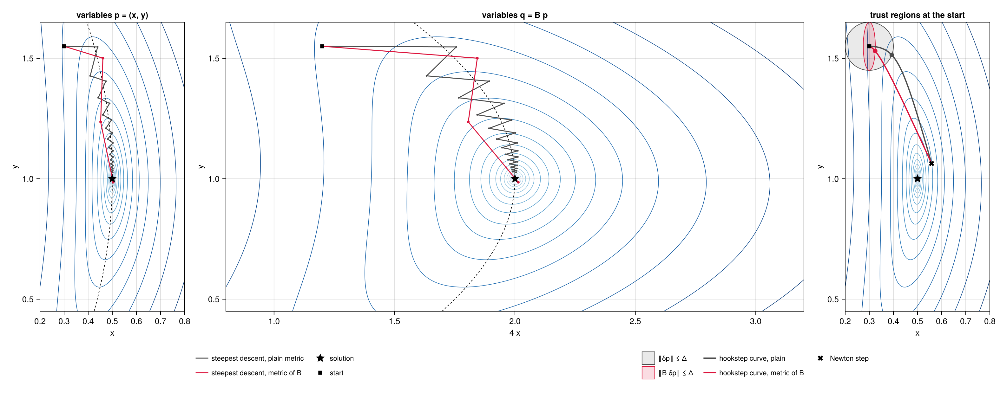

Preconditioning
Both methods converge at a rate set by the spectrum of the linearised residual. For the PDEs in which periodic orbits matter, that spectrum is spread over many decades, and without a preconditioner neither L-BFGS nor the Krylov solver of the hookstep makes useful progress. This page explains why, how a preconditioner enters the two methods, and what is known about choosing it. The Examples measure the effect of several choices. Equations of the other theory pages are cited as (Fn) for the Space-time formulation, (On) for Search by optimisation and (Rn) for Search by root finding.
Why the space-time problem is stiff
Write the Jacobian of the residual, the first block row of (R4), as
\[\mathcal{J}_r\,\delta p = A\,\delta u + \omega\,\partial_s u\;\delta\rho - \sum_i \partial_i u\;\delta c_i , \qquad A = \omega\,\partial_s - \sum_i c_i\,\partial_i - L . \tag{1}\]
On a Fourier mode with temporal index $n$ and spatial wavenumber $k$, the derivatives are multiplications, $\partial_s \to \mathrm{i}\,n$ and $\partial_i \to \mathrm{i}\,k_i$. For a dissipative PDE whose linear part has symbol $-\lambda(k)$, $\lambda > 0$ growing with $k$, the space-time operator acts on that mode, up to the coupling by the nonlinear terms, as
\[\hat A(n, k) \approx \mathrm{i}\,\big(\omega\, n - c\cdot k\big) + \lambda(k) . \tag{2}\]
Its size ranges from order one, for the largest scales, to $\omega n_{\max}$ along the rescaled time and $\lambda(k_{\max})$ along space: $\nu k_{\max}^2$ for viscous diffusion, $k_{\max}^4$ for the Kuramoto–Sivashinsky equation. Even an ODE is not spared: for the Lorenz system the time derivative alone spans $\omega n$ from 0 to $\omega K$ with $K$ modes. The two methods see this spread in different ways.
- L-BFGS minimises $R$ (O1), whose Hessian near a minimiser is, in the Gauss–Newton approximation, $\mathcal{J}_r^+ \mathcal{J}_r$, with eigenvalues $|\hat A(n, k)|^2$. Its condition number grows like $k_{\max}^8$ for Kuramoto–Sivashinsky. Starting every recursion from $\theta I$ and correcting it with a handful of curvature pairs (O7), L-BFGS cannot capture such a spectrum, and behaves like steepest descent.
- GMRES, the Krylov solver of the hookstep, minimises the residual of the linear model over polynomials in $\mathcal{J}$ of degree $n$. It converges fast when the eigenvalues of $\mathcal{J}$ are clustered away from the origin, slowly when they spread over a wide region of the complex plane: here they lie along lines parallel to the imaginary axis, at distance $\lambda(k)$ from it and up to $\pm\,\omega n_{\max}$ along it, and the Krylov space must grow to almost the dimension of the problem before the residual drops.
The parameters add scales of their own: the columns of $\mathcal{J}$ multiplying $\delta\rho$ and $\delta c_i$ are $\omega\,\partial_s u$ and $-\partial_i u$, so $\rho$ and $c_i$ have curvatures $\lVert \omega\,\partial_s u\rVert^2$ and $\lVert \partial_i u\rVert^2$, generally far from that of a single field component.
It is instructive to compare with the classical Newton–Krylov shooting methods for periodic orbits (Sánchez et al. 2004; Viswanath 2007), which solve $\Phi_T(u) - u = 0$ with $\Phi_T$ the flow over a period. There the Jacobian is $M - I$, with $M$ the monodromy matrix; dissipation makes almost all eigenvalues of $M$ tiny, so those of $M - I$ cluster at $-1$, and GMRES needs only as many vectors as there are weakly stable or unstable directions. Time integration acts as an implicit, and very effective, preconditioner. The space-time formulation gives it up, in exchange for avoiding the exponential growth of errors along long and unstable orbits, and must supply a preconditioner explicitly.
A preconditioner as a change of metric
A preconditioner is an invertible operator $B$ on orbits, cheap to invert, that captures the stiff part of the problem. It defines the metric
\[\langle p, q\rangle_B = \langle B p, B q\rangle = \langle p, M q\rangle, \qquad M = B^+ B , \tag{3}\]
in which each direction is measured by its size under $B$. The solutions $r = 0$ do not depend on $B$; only the path of the two methods does.
L-BFGS in the metric $M$. By the Riesz representation theorem, as in (O2), the gradient in this metric is $M^{-1}\nabla R$. Running L-BFGS in it changes the two-loop recursion in two places: the initial inverse Hessian
\[H_0 = \theta\, M^{-1}, \qquad \theta = \frac{\langle y, s\rangle}{\langle y, M^{-1} y\rangle} , \tag{4}\]
instead of $\theta I$, and the first direction, with no curvature pairs, $d = -M^{-1} g$. The Armijo condition (O8) is unchanged, and the cautious test (O7) is kept in the plain norms as a safeguard. If $B$ captures the stiff part of $\mathcal{J}_r$, the preconditioned Hessian $M^{-1}\mathcal{J}_r^+ \mathcal{J}_r$ has a narrow spectrum and the curvature pairs only need to learn the nonlinear corrections.
Hookstep with right preconditioning. The step is written as $\delta p = B^{-1} z$, and the Arnoldi iteration runs on $\mathcal{J} B^{-1}$:
\[\mathcal{J} B^{-1} Q_n = Q_{n+1} H, \qquad \delta p = B^{-1} Q_n y . \tag{5}\]
The derivation (R7)–(R9) goes through with $z = Q_n y$ in place of $\delta p$:
\[\lVert b - \mathcal{J}\,\delta p\rVert = \lVert g - H y\rVert , \qquad \lVert y\rVert = \lVert B\,\delta p\rVert = \lVert \delta p\rVert_B . \tag{6}\]
The residual of the model, and so the predicted reduction of the trust-region update, is unchanged: right preconditioning does not alter the quantity being minimised, only the space in which the step is sought. The trust region becomes the ellipsoid $\lVert \delta p\rVert_B \le \Delta$: stiff directions, large under $B$, are allowed only short steps. When $B$ approximates $\mathcal{J}$, the spectrum of $\mathcal{J}B^{-1}$ is clustered near one and the Krylov spaces are small.
One operator for both. The hookstep applies $B^{-1}$, L-BFGS $M^{-1} = B^{-1}B^{-+}$: with the same $B$ both methods work in the same metric, and a search that runs L-BFGS and then the hookstep keeps a consistent notion of step length. In the code, a preconditioner type extends two functions, precondition! and precondition_adjoint!, which apply $B^{-1}$ and $B^{-+}$ (see Usage).
A picture in two dimensions
The effect of the metric can be seen on a system of two quadratic equations in two unknowns, $p = (x, y)$,
\[r_1 = 4\,(x - \tfrac12) + (y - 1)^2 , \qquad r_2 = (x - \tfrac12)^2 + (y - 1) , \tag{7}\]
with the solution $p_\star = (\tfrac12, 1)$, where the Jacobian is $\mathrm{diag}(4, 1)$. The problem is four times stiffer along $x$ than along $y$, and the Gauss–Newton Hessian of $R = \tfrac12\lVert r\rVert^2$, $\mathcal{J}_r^\top \mathcal{J}_r = \mathrm{diag}(16, 1)$, sixteen times: the level sets of $R$ around the solution are ellipses four times longer along $y$ than along $x$. The preconditioner is $B = \mathrm{diag}(4, 1)$, the Jacobian at the solution. The script is examples/metric/metric.jl.

Left: level sets of $R$ (blue) in the variables $p = (x, y)$, the zero set of $r_1$ (dashed), and steepest descent from the same start in the plain metric (grey) and in the metric of $B$ (red). Centre: the same in the variables $q = Bp = (4x, y)$. Right: at the start, the trust regions $\lVert \delta p\rVert \le \Delta$ (grey) and $\lVert B\,\delta p\rVert \le \Delta$ (red), the hookstep curves of the two metrics from the Newton step (cross) towards steepest descent, and the hooksteps on the two boundaries (dots).
The metric. In the plain metric the steepest-descent direction $-\nabla R$ is normal to the level sets. In a narrow valley it points across the valley, not along it: the path of steepest descent with a line search zigzags from one side to the other (left, grey), and after 25 iterations $R$ is still $3.6 \times 10^{-4}$. In the metric of $B$ lengths are measured as $\lVert B\,\delta p\rVert$, a step along $x$ counting four times more than the same step along $y$, and the steepest-descent direction becomes $-M^{-1}\nabla R$, with $M = B^\top B$: the direction that reduces $R$ fastest per unit of this length. Its first step, like the plain one, goes mostly along $x$ and reaches the floor of the valley; the following ones run along the valley instead of across it, and the path reaches the solution, to rounding, in 6 iterations (left, red).
A change of variables. In the variables $q = Bp$ the metric of $B$ is the plain one, $\lVert B\,\delta p\rVert = \lVert \delta q\rVert$, and the level sets of $\tilde R(q) = R(B^{-1}q)$ are nearly circles around the solution (centre): the stiffness has been removed by stretching $x$ by a factor of four. Near the solution, plain steepest descent in $q$ points at the solution, and its path, mapped back with $p = B^{-1}q$, is the red path on the left. The two descriptions are the same algorithm: with $\nabla_q \tilde R = B^{-\top}\nabla R$, a plain step in $q$, $\delta q = -\alpha\, \nabla_q \tilde R$, is the step $\delta p = B^{-1}\delta q = -\alpha\, B^{-1}B^{-\top}\nabla R = -\alpha\, M^{-1}\nabla R$ in $p$.
L-BFGS in the variables $q$. Running L-BFGS in the metric of $B$ is exactly running plain L-BFGS on $\tilde R(q)$, and this is how the code implements it, without ever forming $q$. The curvature pairs in the variables $q$ are $s_q = B s$ and $y_q = B^{-\top} y$, so that
\[\langle y_q, s_q\rangle = \langle y, s\rangle , \qquad \langle y_q, y_q\rangle = \langle y, M^{-1} y\rangle , \qquad \langle s_q, s_q\rangle = \lVert s\rVert_B^2 ,\]
and the scaling of the initial inverse Hessian of plain L-BFGS in $q$, $\theta = \langle y_q, s_q\rangle / \langle y_q, y_q\rangle$, is the $\theta$ of (4); its initial inverse Hessian $\theta I$ in $q$ is $\theta M^{-1}$ in $p$. The two-loop recursion only needs inner products of these vectors and the action of the initial inverse Hessian, which in $p$ is the application of $B^{-1}B^{-+}$: precondition_adjoint! followed by precondition!. Its convergence is governed by the Hessian of $\tilde R$, whose Gauss–Newton approximation is $(\mathcal{J}_r B^{-1})^\top (\mathcal{J}_r B^{-1})$: by the singular values of $\mathcal{J}_r B^{-1}$.
The hookstep in the variables $q$. The same change of variables applies to the Newton system. In $q$ the residual is $r(B^{-1}q)$, whose Jacobian is $\mathcal{J}B^{-1}$: the Arnoldi iteration runs on this operator, and its basis $Q_n$ spans a Krylov space of the variables $q$. The hookstep is computed there, $z = Q_n y$ with $\lVert y\rVert = \lVert z\rVert \le \Delta$, a ball in $q$, and mapped back to the orbit by $B^{-1}$:
\[\delta p = B^{-1} z = B^{-1} Q_n y , \qquad \lVert B\,\delta p\rVert = \lVert y\rVert \le \Delta . \tag{8}\]
This is (5): the factor $B^{-1}$ in front of $Q_n y$ is the map from the variables $q$, in which GMRES and the trust region work, back to the orbit. In the variables $p$ the ball is the ellipsoid $\lVert B\,\delta p\rVert \le \Delta$ (right, red): short along the stiff direction $x$, long along $y$. The hookstep curves start from the same Newton step, which does not depend on the metric, and turn, as the trust region shrinks, towards the steepest-descent direction of their own metric, $-\nabla R$ or $-M^{-1}\nabla R$. With $\Delta = 0.1$ the hookstep on the circle (grey dot) is $\delta p = (0.093, -0.036)$, almost entirely along the stiff direction $x$ and at an angle of $41^\circ$ to the Newton step; the hookstep on the ellipse (red dot) is $\delta p = (0.025, -0.020)$, a quarter as long along $x$, at an angle of $23^\circ$ to the Newton step. The trust region of $B$ measures each direction against its own stiffness and keeps the step closer to the Newton direction. A good preconditioner thus helps the hookstep twice: GMRES converges in fewer steps, because $\mathcal{J}B^{-1}$ is close to the identity, and the trust region has the shape of the problem.
Choosing the preconditioner
The general principle of Newton–Krylov methods for PDEs is physics-based preconditioning (Knoll & Keyes 2004): $B$ is an approximation of the Jacobian built from the part of the physics that makes the problem stiff, simple enough to invert cheaply. For the space-time residual three ingredients are natural, and the examples compare them.
- The time derivative. $B = 1 + \omega_0 |n|$ on the mode $n$ captures the scale of $\omega\,\partial_s$. It maps the eigenvalues $\mathrm{i}\,\omega n$ of the time derivative to $\mathrm{i}\,\omega n / (1 + \omega |n|) \to \pm\,\mathrm{i}$: two clusters on the imaginary axis, which make the cost independent of the resolution but are not the single cluster near one that GMRES prefers.
- The dissipation. $B = 1 + \lambda(k)$ on the wavenumber $k$ captures the spatial stiffness, $1 + k^4$ for Kuramoto–Sivashinsky. It is the space-time counterpart of the Laplacian or Stokes preconditioners of time-stepping and steady-state solvers (Tuckerman & Barkley 2000).
- The linear space-time operator. $B = \hat A(n, k)$ of (2), with the linear operator frozen at a reference state, combines the two and maps the linear part of $\mathcal{J}$ to the identity. For Kuramoto–Sivashinsky, whose orbits have zero mean, the linearisation about the mean state $u = 0$ gives the diagonal multiplier $\mathrm{i}(\omega_0 n - c_0 k) + k^4 - k^2$. For the Lorenz system the linearisation about the mean state $\bar u$ of the orbit gives $\mathrm{i}\,\omega_0 n\, I - J(\bar u)$, one $3 \times 3$ block per mode; for a flow, the linear operator about the mean flow, block diagonal over the wavenumbers.
The third choice is complex, and not self-adjoint. A real, positive variant keeps only its size, $B = 1 + |\hat A(n, k)|$: it rescales every mode as the operator does but leaves its phase in place, so that the eigenvalues of the linear part of $\mathcal{J}B^{-1}$ lie near the arc $\hat A / |\hat A|$ of the unit circle, from $-\mathrm{i}$ through $1$ to $+\mathrm{i}$, rather than near $1$. The two variants have opposite merits for the two methods. For the hookstep only $\mathcal{J}B^{-1}$ matters, and the complex operator, which clusters the spectrum at one, is the better choice. For L-BFGS the metric $M = B^+B$ has the symbol $|\hat A|^2$, which is close to zero on the slow, linearly unstable modes, where $\hat A$ is small; the gradient $M^{-1}\nabla R$ then amplifies these modes by large factors, and the positive variant, bounded below by one, gives a better metric. Nothing requires the same $B$ for both methods: a System can be rebuilt with a different preconditioner between the L-BFGS and the hookstep phases of a search.
On the parameters $B$ acts as the scalars $\lVert \omega_0\,\partial_s u_0\rVert$ and $\lVert \partial_i u_0\rVert$, the square roots of their Gauss–Newton curvatures, computed on the initial guess. Because the operator is frozen, $B$ stays fixed during an L-BFGS run, where a changing metric would make the curvature pairs inconsistent; for the hookstep it could be rebuilt at every Newton iteration.
Two cautions from the theory of Krylov methods apply. The convergence of GMRES for a non-normal operator is not determined by its eigenvalues alone (Greenbaum, Pták & Strakoš 1996), and the condition number is a poor guide: what matters is that the spectrum of $\mathcal{J}B^{-1}$ is clustered and that the operator is not too far from normal (Wathen 2015). The examples show both effects: preconditioners with similar condition numbers give very different costs, and the clustering of the eigenvalues explains the difference.
Related work
Variational methods that minimise the space-time residual go back to Lan & Cvitanović (2004), who evolve a loop in state space towards a periodic orbit with a Newton descent, and have been developed with adjoint-based gradients for the Navier–Stokes equations by Farazmand (2016), Azimi, Ashtari & Schneider (2022) and Parker & Schneider (2022). Newton–Krylov methods with hookstep trust regions were introduced for relative periodic orbits of plane Couette flow by Viswanath (2007), on the shooting formulation; their theory, inexact Newton steps and the choice of the forcing terms are in Dembo, Eisenstat & Steihaug (1982), Eisenstat & Walker (1996) and Knoll & Keyes (2004). GMRES is due to Saad & Schultz (1986). A general review of preconditioning, with the role of spectral clustering and its limits, is Wathen (2015).
References
- G. Azimi, O. Ashtari and T. M. Schneider, Constructing periodic orbits of high-dimensional chaotic systems by an adjoint-based variational method, Phys. Rev. E 105, 014217 (2022).
- R. S. Dembo, S. C. Eisenstat and T. Steihaug, Inexact Newton methods, SIAM J. Numer. Anal. 19, 400–408 (1982).
- S. C. Eisenstat and H. F. Walker, Choosing the forcing terms in an inexact Newton method, SIAM J. Sci. Comput. 17, 16–32 (1996).
- M. Farazmand, An adjoint-based approach for finding invariant solutions of Navier–Stokes equations, J. Fluid Mech. 795, 278–312 (2016).
- L. Giraud, J. Langou and M. Rozložník, The loss of orthogonality in the Gram–Schmidt orthogonalization process, Comput. Math. Appl. 50, 1069–1075 (2005).
- A. Greenbaum, V. Pták and Z. Strakoš, Any nonincreasing convergence curve is possible for GMRES, SIAM J. Matrix Anal. Appl. 17, 465–469 (1996).
- D. A. Knoll and D. E. Keyes, Jacobian-free Newton–Krylov methods: a survey of approaches and applications, J. Comput. Phys. 193, 357–397 (2004).
- Y. Lan and P. Cvitanović, Variational method for finding periodic orbits in a general flow, Phys. Rev. E 69, 016217 (2004).
- J. P. Parker and T. M. Schneider, Variational methods for finding periodic orbits in the incompressible Navier–Stokes equations, J. Fluid Mech. 941, A17 (2022).
- Y. Saad and M. H. Schultz, GMRES: a generalized minimal residual algorithm for solving nonsymmetric linear systems, SIAM J. Sci. Stat. Comput. 7, 856–869 (1986).
- J. Sánchez, M. Net, B. García-Archilla and C. Simó, Newton–Krylov continuation of periodic orbits for Navier–Stokes flows, J. Comput. Phys. 201, 13–33 (2004).
- L. S. Tuckerman and D. Barkley, Bifurcation analysis for timesteppers, in Numerical Methods for Bifurcation Problems and Large-Scale Dynamical Systems, IMA Vol. Math. Appl. 119, 453–466, Springer (2000).
- D. Viswanath, Recurrent motions within plane Couette turbulence, J. Fluid Mech. 580, 339–358 (2007).
- A. J. Wathen, Preconditioning, Acta Numerica 24, 329–376 (2015).